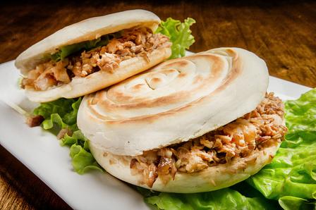
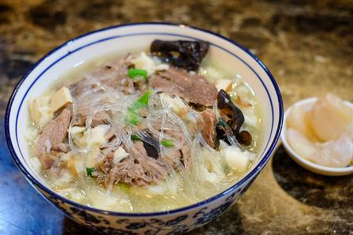
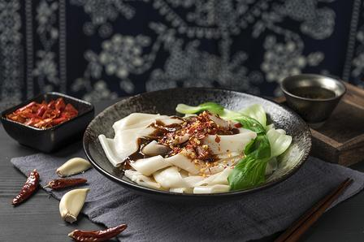
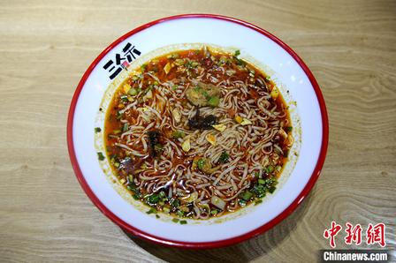
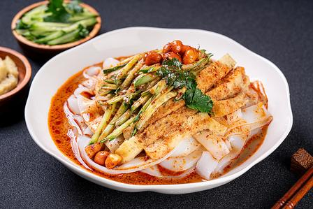
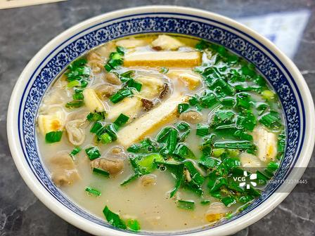
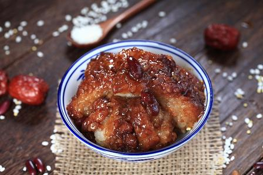
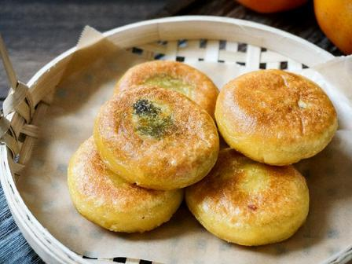

馍类白吉馍夹腊汁肉，“中式汉堡”的鼻祖。
腊汁肉用老汤慢炖数小时，肥瘦相间、入口即化；白吉馍讲究“铁圈虎背菊花心”，外脆里软。趁热夹上，肉汁渗进馍里，一口下去满嘴油香。
怎么吃
- 点“肥瘦”版本最香，纯瘦会柴。
- 配一碗粉丝汤，或者一瓶冰峰汽水。
小贴士：老西安人说“肉夹馍”其实是“肉夹于馍”的倒装，古汉语的习惯。
Food Guide
按类型筛选，点开卡片看做法、吃法和只有本地人才知道的小讲究。

馍类白吉馍夹腊汁肉，“中式汉堡”的鼻祖。
腊汁肉用老汤慢炖数小时，肥瘦相间、入口即化；白吉馍讲究“铁圈虎背菊花心”，外脆里软。趁热夹上，肉汁渗进馍里，一口下去满嘴油香。
小贴士：老西安人说“肉夹馍”其实是“肉夹于馍”的倒装，古汉语的习惯。

馍类一碗要自己动手掰馍的“慢食”。
汤用羊肉、羊骨加香料熬足一夜，汤色乳白。馍要自己掰成黄豆大小，师傅再浇汤回锅，配糖蒜、辣酱、香菜，热气腾腾一大碗。
小贴士：老字号分“口汤”“干泡”“水围城”几种吃法，区别在汤多汤少。

面食一根面有裤带宽，泼上热油“刺啦”一声。
面团醒好后扯成宽厚长条，下锅煮熟，铺上辣椒面、蒜末、葱花，一勺滚油泼上去，再调醋和酱油。面宽厚筋道，辣香直冲鼻子。
小贴士：“biang”是关中方言造的字，民谣唱：“一点飞上天，黄河两道弯……”

面食一碗面，酸辣香，汤要“煎稀汪”。
臊子用猪肉丁炒制，加醋、辣椒面、香料慢炖；面薄筋光，汤酸辣鲜香，上面漂着黄花、木耳、豆腐、鸡蛋皮，红黄绿白黑五色俱全。
小贴士：在岐山，一碗面只盛一筷头，吃完再添，叫“一口香”。

小吃夏天救命，冬天也戒不掉。
米皮或面皮蒸熟切条，浇上醋、蒜水、辣椒油、盐水，配黄瓜丝、豆芽。秦镇米皮软糯，汉中面皮筋道，各有各的拥趸。
小贴士：辣椒油是灵魂，每家店的配方都是不外传的秘密。

馍类比羊肉泡馍更“硬核”的一碗。
主料是猪大肠，因肠段形似葫芦而得名；汤浓味厚，配掰碎的馍、粉丝、木耳，撒一把香菜，是老西安的深夜慰藉。
小贴士：相传这碗汤和药王孙思邈有关，他送的药葫芦让汤更香。

小吃糯米、红枣、芸豆，蒸一夜的甜。
用“甑”这种古老炊具，一层米、一层枣、一层豆铺好，慢火蒸透。米软枣甜，豆沙绵密，切一块捧在手里，是西安人的经典早餐。
小贴士：读作 zèng gāo，不读“jìng”。

小吃用临潼火晶柿子做的甜点。
火晶柿子去皮和面，包入黄桂、核桃、糖馅，油煎至两面金黄。外皮微脆，内里软糯流心，柿子的清甜混着桂花香。
小贴士：临潼火晶柿子皮薄如纸、甜如蜜，是这道点心的灵魂。
Culture
陕西人吃饭，吃的是味道，也是讲究。
机器切的馍不入味，手掰的才叫泡馍。掰得越碎，越能吸饱汤；掰馍的十分钟，也是同桌人聊天的时间。
biang 字五十多画，电脑打不出来，只能手写或拼图。关中民谣一句一句教你怎么写，比笔画更难忘。
凉皮、肉夹馍、冰峰汽水，陕西人的“快乐三件套”。一顿饭十几块钱，从学生到上班族都吃这一口。
One Day
从清晨的甑糕到深夜的烤肉，跟着时间吃准没错。
回民街的早点摊，热腾腾一块甑糕，配一碗咸香油茶。
凉皮 + 肉夹馍 + 冰峰，十几块钱吃得心满意足。
自己掰馍，掰到黄豆大小，浇汤回锅，配糖蒜。
西安的夜属于烤肉摊，孜然味飘一条街。